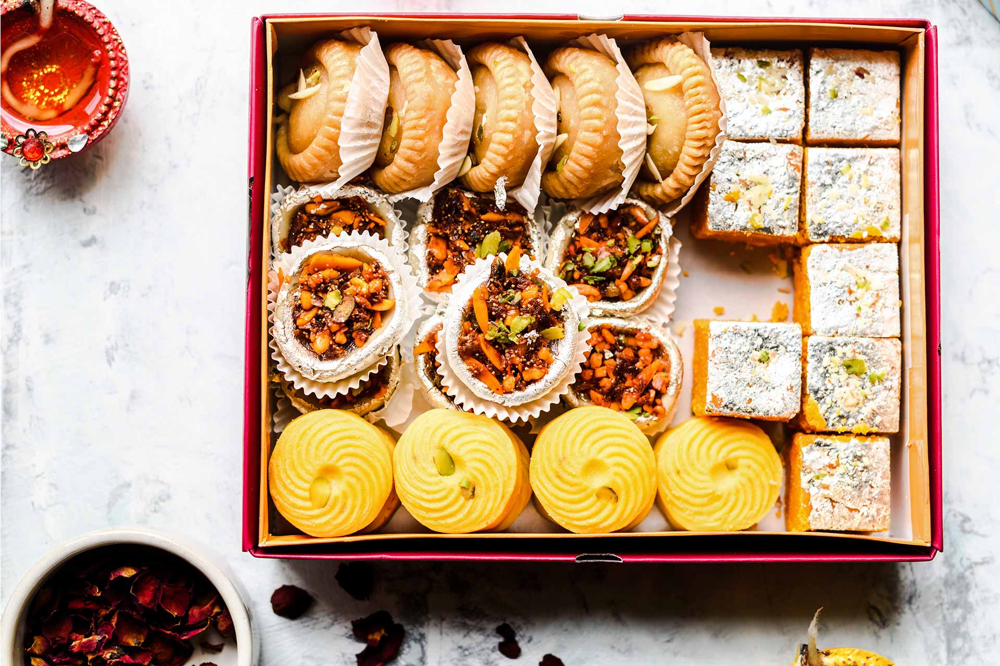
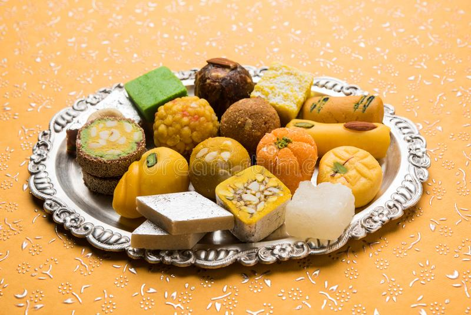
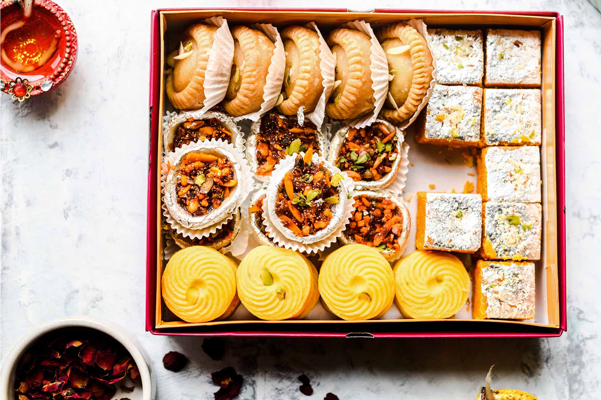
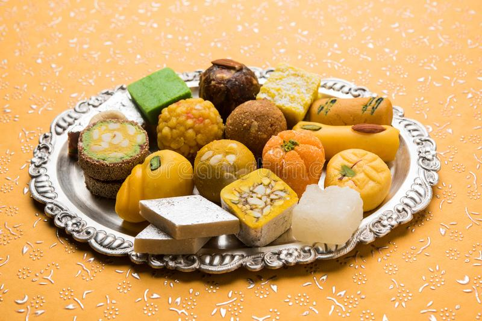

|
|
 |  |
| Rasgulla | ||
| Gulab jamun | ||
| Ras Malai | ||
| kheer | ||
| kulfi | ||
| Rabri |

|
|
| Barfi | ||
| Jalebi | ||
| Kaju katli | ||
| Kalakand | ||
| Kheer |
|
|
 |  |
| Rasgulla | ||
| Gulab jamun | ||
| Ras Malai | ||
| kheer | ||
| kulfi | ||
| Rabri |
|
|
| Barfi | ||
| Jalebi | ||
| Kaju katli | ||
| Kalakand | ||
| Kheer |
Rasgulla, a popular Indian sweet, is a delectable treat that melts in your mouth. These spongy, round sweets are made from fresh cottage cheese (chhena) and soaked in a fragrant sugar syrup infused with cardamom. Rasgullas are renowned for their delicate texture and mild, sweet flavor. With each bite, you experience a burst of sweetness, balanced by the light and airy consistency of the chhena. Rasgullas are not overly rich, making them the perfect dessert to savor after a hearty meal.
Gulab Jamun is a delectable Indian sweet, loved for its indulgent taste and soft, melt-in-your-mouth texture. These golden-brown dumplings are made from a mixture of khoya (reduced milk) and flour, deep-fried to perfection, and then soaked in fragrant sugar syrup.The name "Gulab Jamun" itself evokes the essence of this dessert, with "Gulab" meaning rose and "Jamun" referring to a berry. .
Ras Malai, a beloved Indian sweet, is a delicacy that delights the palate with its exquisite flavors. Soft, spongy cheese balls, known as "malai," are soaked in a fragrant milk syrup infused with cardamom and saffron. Each bite is a harmony of textures: the creamy malai, soaked in the sweet syrup, simply melts in your mouth. Ras Malai is a perfect blend of richness and subtlety, with a hint of floral saffron and the warmth of cardamom.
Kheer, a beloved Indian dessert, is a creamy rice pudding infused with aromatic spices. This delectable sweet treat is made by simmering rice, milk, and sugar until the mixture thickens to a velvety consistency. The magic of kheer lies in its enticing blend of flavors - the nutty richness of slow-cooked rice, the sweetness of condensed milk, and the fragrance of cardamom and saffron.
Kulfi, a beloved Indian dessert, is a creamy and indulgent frozen treat that delights the taste buds with its rich flavors and smooth texture. This dessert, often referred to as "traditional Indian ice cream," is made by simmering milk until it thickens, then infusing it with cardamom, saffron, or pistachios for a burst of aromatic flavor.
Rabri is a traditional Indian dessert that's simply divine. It's made by simmering sweetened milk for hours until it thickens and turns a beautiful shade of cream. The result is a rich, creamy, and slightly grainy sweet delight. The taste is a perfect balance of sweetness and a hint of caramelization, with a touch of cardamom or saffron adding a subtle, aromatic twist. Served chilled, Rabri melts in your mouth, leaving behind a heavenly aftertaste.
Barfi is a popular Indian sweet renowned for its delectable taste and rich texture. This delightful confection is crafted from condensed milk, sugar, and a variety of flavorings like cardamom, pistachio, or almond. Barfi boasts a melt-in-your-mouth experience, offering a perfect balance of sweetness and creaminess. Each bite unveils a burst of aromatic flavors, leaving a lasting impression on your taste buds.
Jalebi is a popular Indian sweet renowned for its irresistible taste. These deep-fried spirals, made from fermented batter, are soaked in a fragrant sugar syrup. The result? A symphony of flavors and textures. Crispy on the outside, yet syrupy and soft on the inside, every bite is an explosion of sweetness with a hint of tanginess from the fermented batter.
Kaju Katli, a beloved Indian sweet, is a delectable confection crafted from finely ground cashews, sugar, and ghee. Its smooth, melt-in-the-mouth texture and mild nutty flavor make it a favorite during celebrations and festivals. This classic dessert boasts a rich heritage and is known for its irresistible taste. It strikes a harmonious balance between the sweetness of sugar and the subtle richness of cashews.
Kalakand is a delightful Indian sweet known for its rich and creamy texture. Made from fresh paneer (cottage cheese) and condensed milk, it's flavored with cardamom and garnished with slivered almonds or pistachios. Kalakand is a beloved treat during festivals and special occasions.The taste of Kalakand is a perfect balance of sweetness and a hint of cardamom's aromatic warmth. Its soft, grainy texture melts in your mouth, leaving a lingering, sweet sensation.
Kheer is a delightful Indian dessert known for its rich and creamy texture. It's made by simmering rice or vermicelli in sweetened milk, infused with aromatic cardamom and garnished with slivers of almonds and pistachios. The result is a comforting, mildly sweet treat that captivates your taste buds with its subtle flavors and enticing aroma.